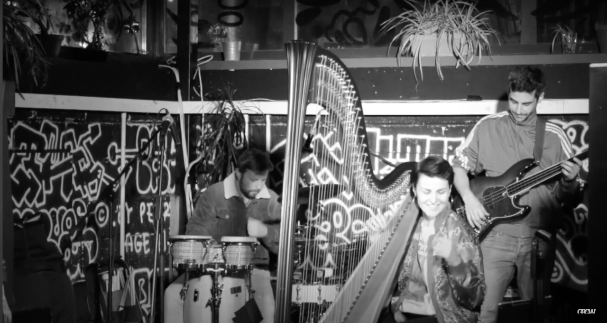

Tech Manager at Grow, Hackney
Live music & Streaming engineer, lighting, acoustics, PA and equipment maintenance
I manage the audio, visual, lighting operation of all the spaces within the venue, as well as working as a Duty Engineer in most of the events. I work closely with the Events and Marketing Manager & Head of Operations to assist in delivering audio events to a high standard. This includes but not limited to program and operate lighting, sound desks and visual equipment. Setting up stage, mics, lights, cameras and obs, making separate mixes for the room, outside and recording/live-streaming. I also manage a team of Tech contractors ensuring they are trained and briefed on tech spec, production information; noise management and artist liaison specifications for each event.


prev
next